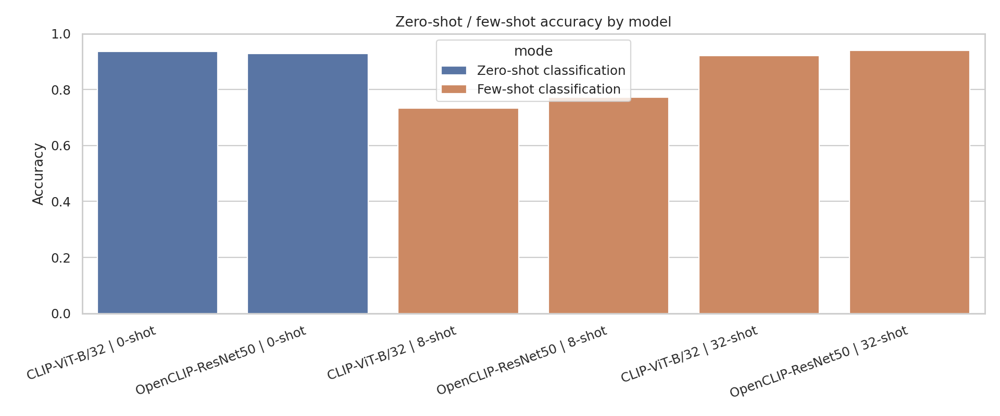
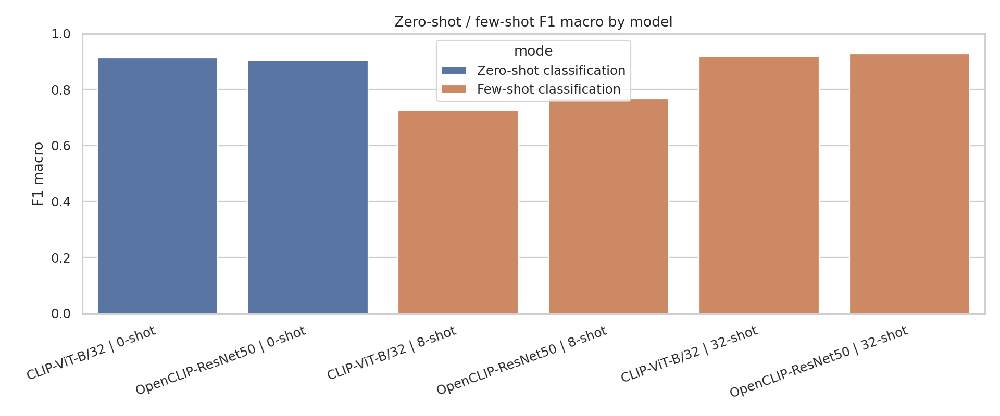
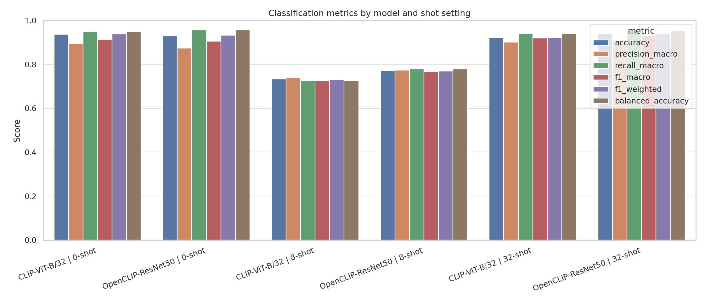
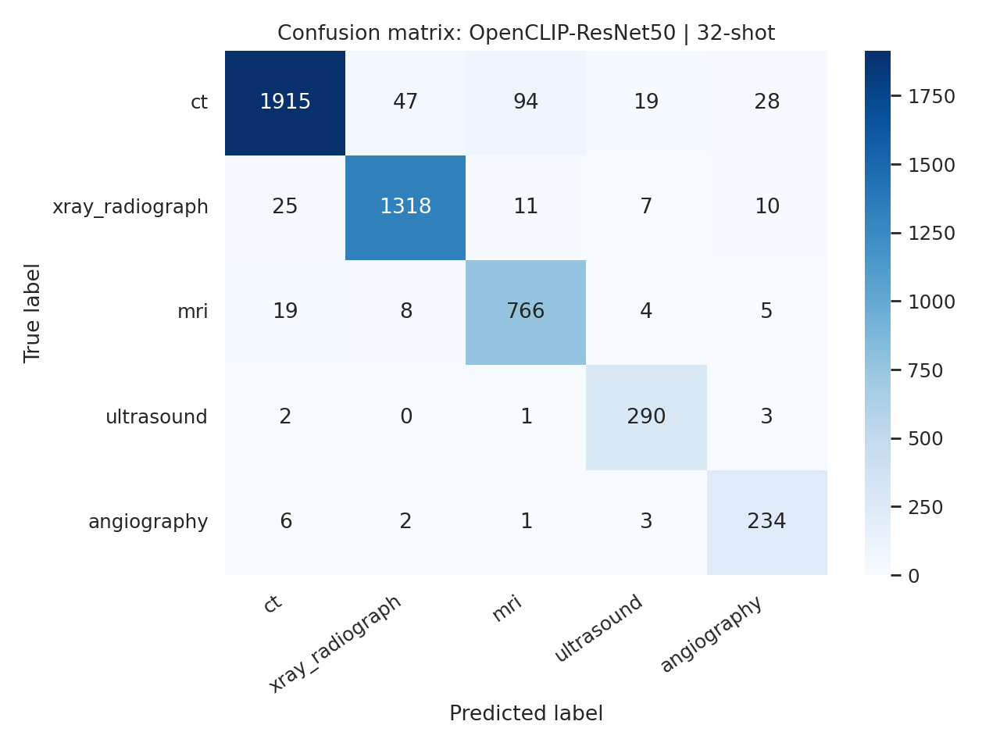
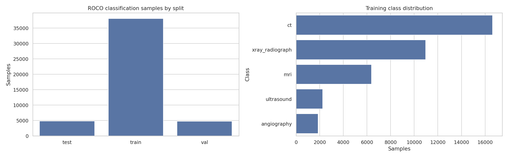
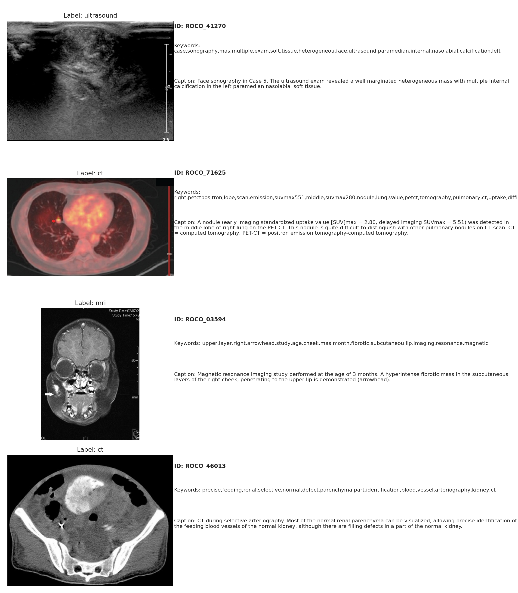
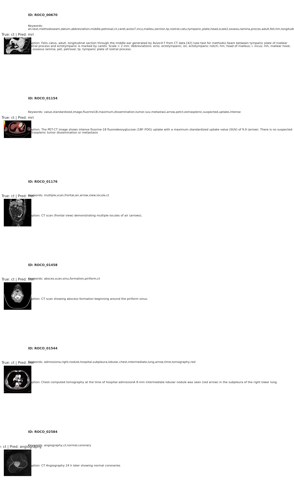

ROCO Radiology — Phân loại đa phương thức bằng CLIP
Dashboard tổng hợp output mới từ outputs/ và docs/: keyword-filter ROCO Radiology thành 5 lớp, so sánh CLIP-ViT-B/32 với OpenCLIP-ResNet50 ở zero-shot và few-shot trên frozen multimodal features.
Pipeline tổng quan
Raw input
Đọc ảnh ROCO Radiology cùng caption/report text và ba split train, val, test.
Keyword filter
Lọc theo keyword group, giữ 5 lớp có đủ dữ liệu và ảnh hợp lệ.
Feature extraction
Dùng frozen CLIP/OpenCLIP encoder để lấy image, caption và multimodal embeddings.
Evaluation
Zero-shot bằng class-name prompts và few-shot classifier với 8/16/32 mẫu mỗi lớp.
Analysis
Xuất model comparison, classification report, confusion matrix, predictions và plot report.
Kết quả thí nghiệm
Số liệu lấy từ outputs/model_comparison.csv, outputs/dataset_summary.csv, outputs/keyword_filter_summary.csv và report theo từng mô hình. Accuracy, recall, precision và F1 hiển thị dạng phần trăm.
1. Dataset sau keyword filter
| Split | Rows trước filter | Rows sau keyword | Rows sau ảnh + class | Keep rate | Mean caption len |
|---|---|---|---|---|---|
| train | 65 448 | 38 092 | 38 072 | 58,20% | 140,68 |
| val | 8 180 | 4 752 | 4 749 | 58,09% | 139,90 |
| test | 8 179 | 4 820 | 4 818 | 58,93% | 143,94 |
2. Phân bố lớp
| Lớp | Train | Val | Test | Keyword gợi ý |
|---|---|---|---|---|
| ct | 16 623 | 2 051 | 2 103 | ct, tomography, computed tomography |
| xray_radiograph | 10 963 | 1 378 | 1 371 | xray, x-ray, radiograph, radiographic |
| mri | 6 384 | 832 | 802 | mri, magnetic, resonance |
| ultrasound | 2 241 | 250 | 296 | ultrasound, sonograph, sonography |
| angiography | 1 861 | 238 | 246 | angiography, angiogram, arteriography |
3. So sánh mô hình trên test
| Model | Mode | Shots | Accuracy | Balanced Acc | Precision macro | Recall macro | F1 macro |
|---|---|---|---|---|---|---|---|
| CLIP-ViT-B/32 | Zero-shot classification | 0 | 93,59% | 94,89% | 89,40% | 94,89% | 91,39% |
| OpenCLIP-ResNet50 | Zero-shot classification | 0 | 92,86% | 95,63% | 87,38% | 95,63% | 90,43% |
| CLIP-ViT-B/32 | Few-shot classification | 8 | 73,33% | 72,57% | 74,08% | 72,57% | 72,55% |
| OpenCLIP-ResNet50 | Few-shot classification | 8 | 77,19% | 77,86% | 77,30% | 77,86% | 76,61% |
| CLIP-ViT-B/32 | Few-shot classification | 32 | 92,20% | 94,13% | 89,99% | 94,13% | 91,85% |
| OpenCLIP-ResNet50 | Few-shot classification | 32 | 93,88% | 95,16% | 90,86% | 95,16% | 92,85% |
4. Few-shot theo số shot
Bảng so sánh chính dùng các dòng có trong docs/plot/model_comparison.json: zero-shot, 8-shot và 32-shot. artifact_manifest.csv cũng liệt kê thêm artifact 16-shot nếu cần mở rộng.
5. Best model: OpenCLIP-ResNet50 32-shot
| Lớp | Precision | Recall | F1 | Support |
|---|---|---|---|---|
| ct | 97,36% | 91,06% | 94,10% | 2 103 |
| xray_radiograph | 95,85% | 96,13% | 95,99% | 1 371 |
| mri | 87,74% | 95,51% | 91,46% | 802 |
| ultrasound | 89,78% | 97,97% | 93,70% | 296 |
| angiography | 83,57% | 95,12% | 88,97% | 246 |
| macro avg | 90,86% | 95,16% | 92,85% | 4 818 |
6. Confusion matrix — OpenCLIP-ResNet50 32-shot
| True \ Pred | ct | xray | mri | ultrasound | angiography |
|---|---|---|---|---|---|
| ct | 1 915 | 47 | 94 | 19 | 28 |
| xray_radiograph | 25 | 1 318 | 11 | 7 | 10 |
| mri | 19 | 8 | 766 | 4 | 5 |
| ultrasound | 2 | 0 | 1 | 290 | 3 |
| angiography | 6 | 2 | 1 | 3 | 234 |
7. Hiệu năng và artifact
| Model | Mode | Shots | Eval samples | Time / sample | Trainable params | Output chính |
|---|---|---|---|---|---|---|
| CLIP-ViT-B/32 | Zero-shot | 0 | 4 818 | 0,000026 ms | 0 | classification_report_clip_vit_b_32_0shot.csv |
| OpenCLIP-ResNet50 | Zero-shot | 0 | 4 818 | 0,000060 ms | 0 | classification_report_openclip_resnet50_0shot.csv |
| CLIP-ViT-B/32 | Few-shot | 32 | 4 818 | 0,002342 ms | 1 285 | classifier_clip_vit_b_32_32shot.pkl |
| OpenCLIP-ResNet50 | Few-shot | 32 | 4 818 | 0,002410 ms | 1 285 | classifier_openclip_resnet50_32shot.pkl |
8. Plot trong docs mới
Các ảnh dưới đây trỏ tới artifact được liệt kê trong outputs/artifact_manifest.csv. Nếu chạy ngoài workspace, cần giữ nguyên thư mục docs/plot/ cạnh file HTML.







Điểm nổi bật
CLIP-ViT-B/32 zero-shot đạt 93,59% accuracy; OpenCLIP-ResNet50 32-shot đạt tốt nhất với 93,88% accuracy và 92,85% F1 macro.
Mất cân bằng lớp
Test set bị lệch về CT và X-ray; vì vậy dashboard giữ balanced accuracy, recall macro và F1 macro bên cạnh accuracy.
Artifact
Các CSV trong outputs/ và plot trong docs/plot/ có thể dùng trực tiếp cho phụ lục hoặc Streamlit dashboard.